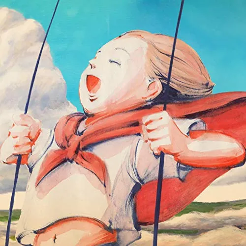

-
KICK BACK
체인소맨op
2022년 11월 23일 발매한 13번째 싱글
실제로 곡에 전기톱 효과음이 포함되었다.
-
地球儀(지구본)
그대들은 어떻게 살 것인가ost
2023년 7월 26일 발매한 14번째 싱글
앨범 일러스트는 미야자키 하야오의
레이아웃 원화를 그대로 사용하였다.

-
ピースサイン(피스 사인)
나의히어로아카데미아 2기1쿨op
요네즈 켄시의 7th 싱글《ピースサイン》에 수록되었다.
어린 시절의 울보였던 자신에게 전하고
싶은 메시지를 가사에 담았다고 한다.
-
海の幽霊(바다의유령)
해수의 아이ost
2019년 9월 19일에 발매한 디지털 싱글
요네즈 켄시 측에서 먼저 애니메이션 제작진 측에
접촉해 주제가를 맡고 싶다는 의향을 전했다고함.
-
Lemon
TBS 금요 드라마「언내추럴」ost
2018년 03월 14일 발매한 8번째 싱글《Lemon》에 수록
일본 음악 역사상 단기간에 가장
많은 다운로드 수를 기록했다.
-
LOSER
2016년 09월 28일
싱글 5집《LOSER / ナンバーナイン》에 수록됨
MV는 요네즈 켄시 본인이 직접 등장해
춤을 추는 것으로도 화제가 되었다.
-
Flamingo
소니의 와이어레스 이어폰의 CM송으로 타이업되었다.
9th 싱글《Flamingo/TEENAGE RIOT》에 수록됨
엔카나 타령을 연상케 하는 새로운 창법이 특징.
-
感電(감전)
TBS 드라마 MIU404의 주제가로 타이업되어 사용되었다.
요네즈 켄시 5집 《STRAY SHEEP》의 수록곡
MV는 7월 10일 오후 업로드된 404 NOT FOUND라는
제목의 티저 영상을 통해 예고되었다.
-
月を見ていた
(달을 보고 있었다)파이널 판타지 XVI의 테마송
2023년 6월 26일 음원 공개됨
라이브 투어의 제목이 「공상」인데
이를 영어로 옮기면 Fantasy이다.
-
死神(사신)
동명의 라쿠고를 원작으로 만들어진 노래
요네즈 켄시 11번째 싱글 《Pale Blue》의 수록곡
라이브에서 아쟈라카모쿠렌 테케렛츠노파를
외치기 위해 만든 곡이라고 한다.

-
POP SONG
PS와의 콜라보레이션을 통해 제작된 곡
2022년 02월 07일 발매
우리나라 기준으로 유튜브에서
인기 급상승 음악 12위를 기록했다.
-
M八七(M87)
신 울트라맨ost
12th싱글 타이틀곡, 2022년 4월 15일에 일부공개
87은 고로아와세로 '하치'라고 읽을 수 있다. 물론 7을
치로 읽는 건 흔히 읽는 방법은 아니므로 우연의 일치.
-
馬と鹿(말과 사슴)
TBS계 드라마 〈노 사이드 게임〉ost
2019년 09월 11일 10th 싱글의 표제곡.
제목인 말과 사슴은 바보를
뜻하는 바카(馬鹿)를 변형한 것으로 보인다.
-
orion
3월의 라이온 2쿨 ED
요네즈 켄시 6th 싱글 《orion》에 수록
2019년 4월 3일 유튜브 조회수 1억을 돌파했다.
요네즈 켄시의 곡으로는 6번째 기록.
-
LADY
일본 조지아 TVCM의 CM송으로 타이업
2023월 03월 21일 발매됨.
POP SONG 이후 1년 만에 새로운 CM송을 담당하였다.
-
パプリカ(파프리카)
NHK 공식 2020 도쿄 올림픽 응원곡.
2018년 08월 15일 출시함
요네즈 켄시에 따르면 제목은 소리 울림이
좋고 귀여워서 정했다고 하며, 큰 의미는 없다고 한다.